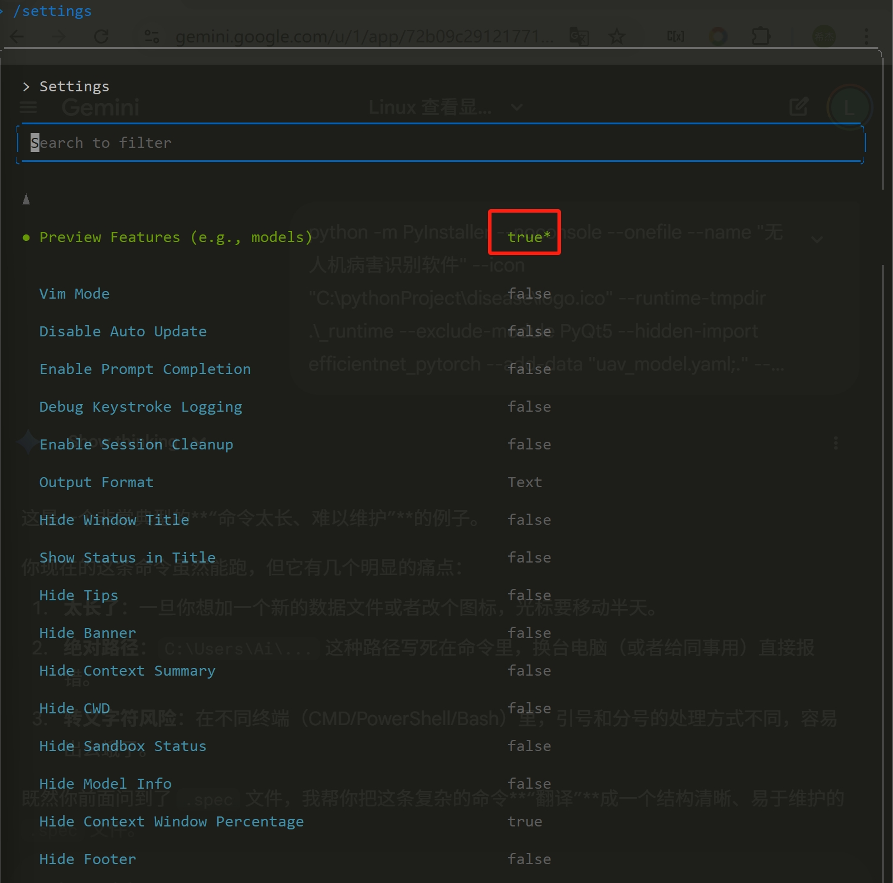

Gemini CLI 配置指南
Gemini CLI 配置指南
配置Gemini CLI，可在vscode中集成，提升开发效率。
目录
基本要求
- 科学上网：能够访问 Google 服务
- Google账号：用于登录和使用 Gemini
- Node.js：下载Gemini CLI
配置步骤
Step 1: 安装 Gemini CLI
全局安装 Gemini 命令行工具：
1 | npm install -g @google/gemini-cli |
Step 2: 验证安装
确认安装成功并检查版本：
1 | gemini --version |
Step 3: 配置网络代理
由于 Gemini 需要访问 Google 服务，必须配置代理。
3.1 启动系统代理
确保你的代理工具（如 Clash、V2Ray 等）已启动并运行。
3.2 设置终端代理
**Windows (CMD/PowerShell)**：
1 | # CMD |
Linux/macOS：
1 | export http_proxy=http://127.0.0.1:xxxx |
⚠️ 注意: 将
xxxx替换为你的实际代理端口号
3.3 验证代理配置
测试是否能访问 Google：
1 | curl -I https://www.google.com |
成功输出示例：
1 | HTTP/1.1 200 OK |
Step 4: 首次登录
在配置好代理的终端中启动 Gemini：
1 | gemini # 终端输入 |
4.1 选择登录方式
终端会显示登录选项，选择 **”Login with Google”**：

4.2 浏览器授权
- Chrome 浏览器会自动打开 Google 登录页面
- 选择你的 Google 账号并授权
- 授权成功后返回终端
4.3 登录成功
终端显示 Gemini CLI 交互界面：

4.4 选择模型
终端右下角会显示选用Gemini的模型版本：

若非最新版本，则启动gemini：
输入
/settings；
通过回车切换，将
Preview Features设置为true；按
ESC保存并回到命令行；输入
/model后会就可看到Gemini 3模型。
至此，Gemini CLI 基础配置完成！
VSCode集成
在 VSCode 扩展市场中搜索并安装以下插件：
1. Gemini Code Assist
功能特性：
- 智能代码补全和建议
- 代码解释和文档生成
- 错误诊断和修复建议
- 代码重构和优化
安装方式：
1 | VSCode 扩展商店 → 搜索 "Gemini Code Assist" → 安装 |
登录：与 CLI 登录方式相同
2. Gemini CLI Companion
功能特性：
- 上下文感知： 自动理解项目文件结构和代码逻辑
- 减少重复操作：无需频繁复制粘贴代码
- 项目级对话：在项目上下文中与 Gemini 对话
- 精准问答：基于当前工作区的智能回答
安装方式：
1 | VSCode 扩展商店 → 搜索 "Gemini CLI Companion" → 安装 |
推荐: 两个插件配合使用，获得最佳体验
常用命令
终端命令
1 | gemini --version # 查看版本 |
CLI 内部命令
1 | /auth # 重新登录 |
代理配置
1 | # Windows |
参考资料
- Gemini API 文档: https://ai.google.dev/docs
- Gemini CLI GitHub: https://github.com/google/gemini-cli
本博客所有文章除特别声明外，均采用 CC BY-NC-SA 4.0 许可协议。转载请注明来自 炒饭加蛋！